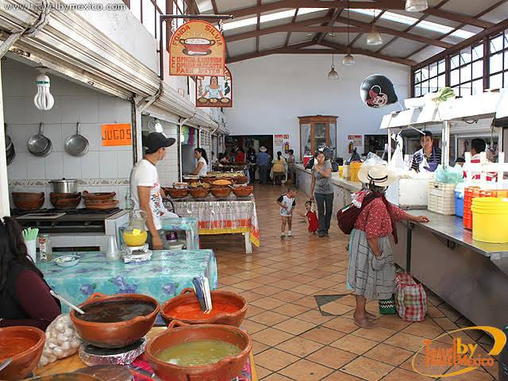

Iglesia San Francisco de Asís
Se encuentra junto a la Plaza Independencia, en el centro histórico de Valle de Bravo. Es uno de los edificios religiosos más importantes del municipio.
Destaca por sus torres, campanarios y arquitectura histórica. Es un atractivo para quienes disfrutan de la historia y las tradiciones.

Jardin de Valle de Bravo
Se ve el kiosco con techo de teja y luces cálidas. Los árboles, probablemente jacarandas, dan sombra a la plaza.
A la derecha asoma la torre de la parroquia, que está frente a la plaza. Es el punto de reunión del pueblo: ahí hay música, antojitos y paseos, sobre todo en las tardes y los fines de semana.

Mercado municipal
Valle de Bravo cuenta con mercado donde las familias salen a realizar compras para su semana.
Estas costumbres mantienen vivas las tradiciones de sus habitantes y fortalecen la identidad de la comunidad.